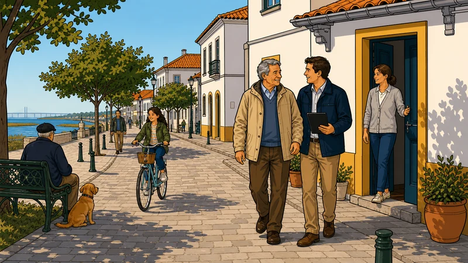
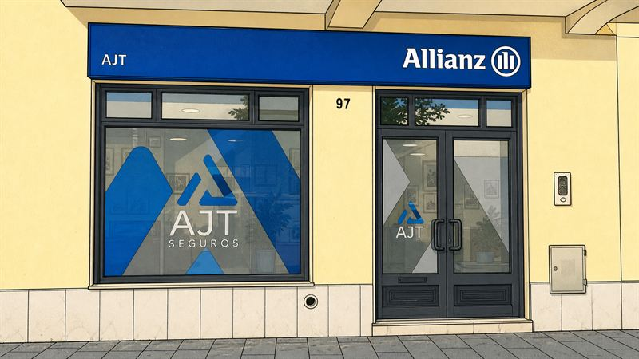
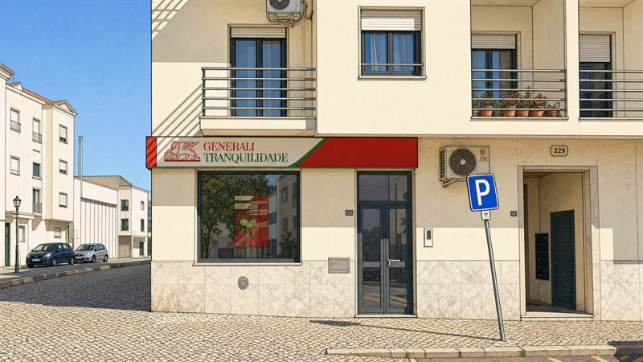

Dizer quando não compensa
Se a apólice que já tem é melhor do que a nossa, dizemos isso e ficamos por ali.
Abrimos em Janeiro de 2002 e fazemos o mesmo desde então, cada vez melhor: traduzir seguros para português corrente e estar presentes no dia em que é preciso usá-los.
Quem somos
Um mediador faz três coisas que a companhia, sozinha, não faz: compara propostas, explica-as em linguagem que se percebe e representa o cliente quando é preciso acionar a apólice.
É esse o nosso trabalho desde 2002. Somos uma equipa pequena, com dois escritórios em Alcochete, onde se entra sem marcação e se é atendido por quem já conhece o processo. Não temos call center, não temos senhas e não temos guião.
Em duas décadas acompanhámos primeiras casas, cartas de condução e negócios que abriram — e os dias em que um seguro deixa de ser um papel e passa a ser o que segura as contas.
Como pensamos
Não são valores de brochura. São o que decide se um cliente fica connosco vinte anos ou um.
Se a apólice que já tem é melhor do que a nossa, dizemos isso e ficamos por ali.
Franquias, carências, capitais e exclusões explicam-se antes de assinar. Uma surpresa no dia do sinistro é falha nossa, nunca do cliente.
Sem marcação, sem senha, sem transferir a chamada. Quem atende é quem trata — e trata até ao fim.

Onde estamos
Pode aparecer sem marcação. Se vier tratar de um assunto concreto, traga a apólice: poupa uma segunda viagem.


Não precisa de saber qual é o escritório certo: tratam dos mesmos assuntos, incluindo os seguros de empresa. Quem o atende acompanha-o até ao fim.
A empresa
A mediação de seguros é uma atividade regulada. Estes são os dados que pode confirmar junto da entidade supervisora.
A.J.T. — Sociedade de Mediação de Seguros, Lda
NIF 505991888
Constituída a 30 de Janeiro de 2002
Mediador de seguros sujeito à supervisão da ASF. Os elementos completos do registo aguardam validação formal pelo titular.
Generali Tranquilidade, representada nos dois escritórios em Alcochete.
Pode confirmar o nosso registo a qualquer momento em asf.com.pt. Mais detalhe em Informação legal.
Escrever-nos
Quanto mais concreto for, mais útil é a resposta. Se quer comparar, diga a companhia e quanto paga hoje.
Usamos o que escrever só para lhe responder. Não partilhamos com terceiros nem o inscrevemos em newsletters, e pode pedir a eliminação quando quiser.